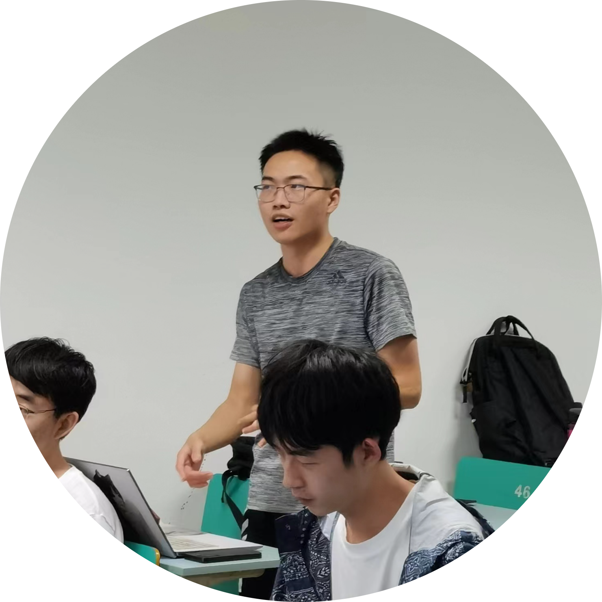

Jiajun Zhu
I'am now a senior student of Mathematics at Zhejiang University, minoring in Management (Specifically, Intensive Training Program of the Chu Kochen Honors College). My current research topics include Explainable and trustworthy AI and AI for science with geometric deep learning (GDL). I am grateful to receive advice from Yang Yang and Pan Li
Email: junian at zju dot edu dot cn
Google Scholar / Github / CV

Teaching
- Teaching Assistant, Stanford Psych225/CS322: Triangulating Intelligence: Melding Neuroscience, Psychology, and AI, Winter 2022
- Teaching Assistant, UC Berkeley CS170: Efficient Algorithms and Intractable Problems, Fall 2019
- Teaching Assistant, UC Berkeley CS70: Discrete Mathematics and Probability Theory, Spring 2018
Honors and Awards
- Honorable Mentions, CRA Outstanding Undergraduate Researchers, 2020
- Arthur M. Hopkin Award, 2018-2019